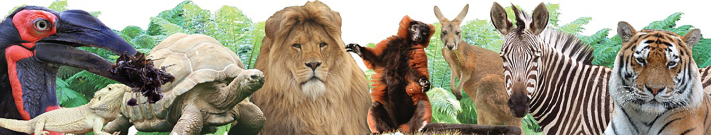

Animalia was created to educate people about animals. Our vision is a world where all people are educated about animals. Animals should be treated with compassion and respect and are free from cruelty. At Animalia We believe that we can create a kinder world for all by fostering respect for animals and that our treatment of animals reflects who we are as individuals and as a society.
Established in October 2017, Animalia initially focused on raising awareness of animals. We were originally called the Australian Federation of Animal Societies (AFAS). Co-Founders of Animalia Faizan and Dr House recognised the need to to raise awareness for animal protection to provide a united and strong voice on behalf of animals. As our knowledge and impact on people's lives have increased through research and community engagement, we have added the key issue of animal conservation to our organisation's core purpose. Now with close to 100 staff members, Animalia looks forward to driving change and providing information and support for animals across the world.
